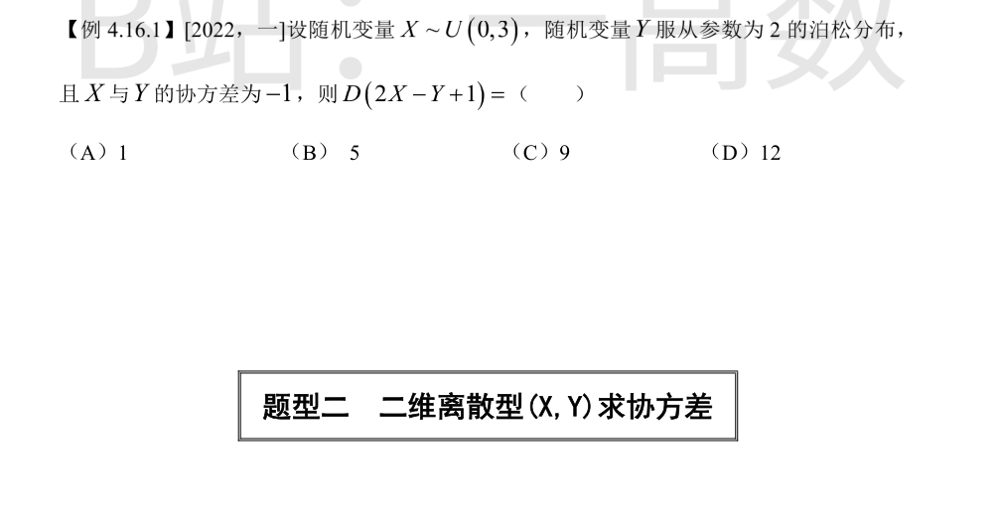
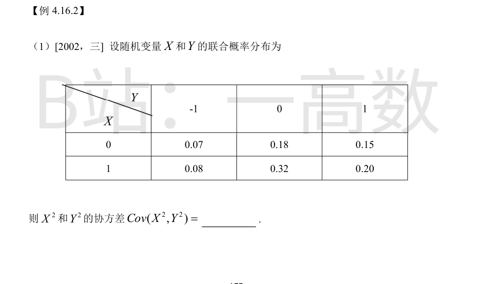
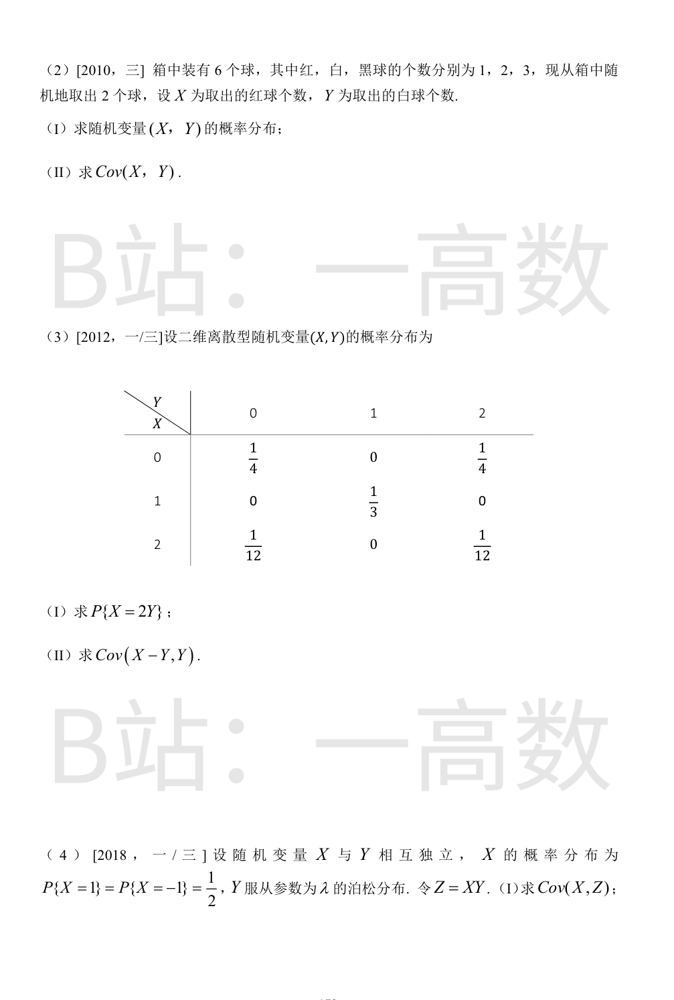
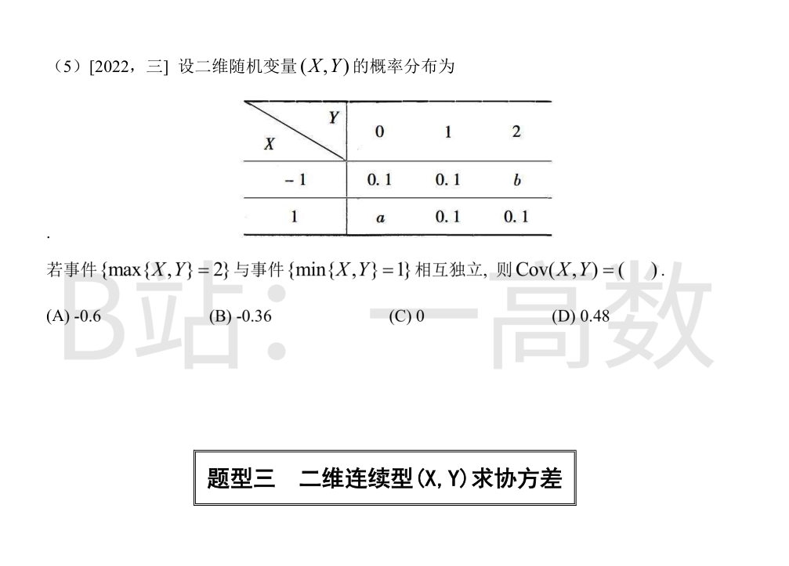
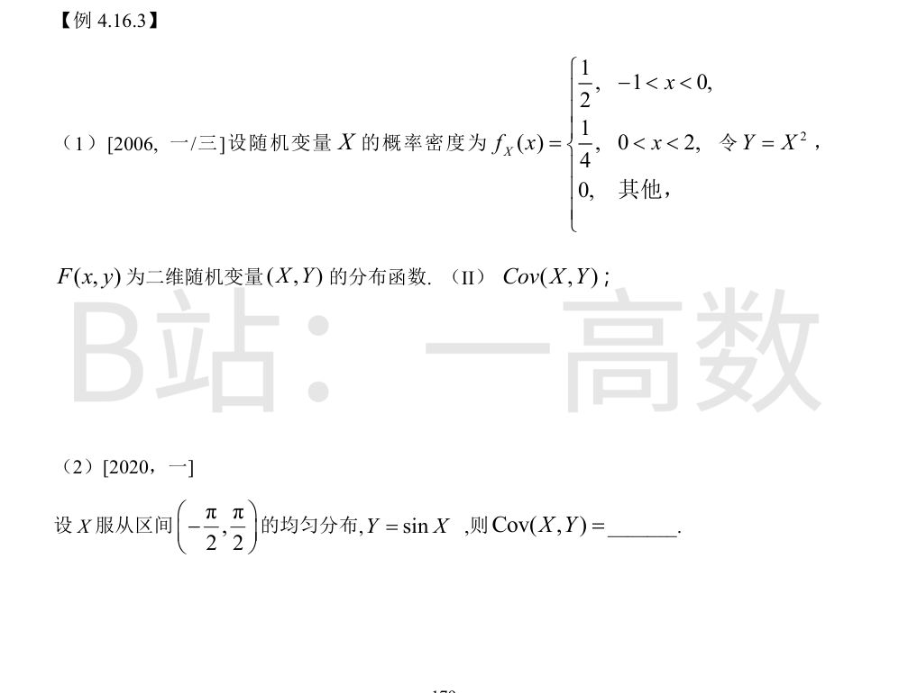

D(X)=\frac{(3-0)^2}{12}=\tfrac34，D(Y)=\lambda=2。
$$D(2X-Y+1)=4D(X)+D(Y)+2\cdot2\cdot(-1)Cov(X,Y)=4\cdot\tfrac34+2+4\cdot(-1)(-1)=3+2+4=9.$$
选 (C)。



X²、Y² 均只取 0,1，故
$$EX^2=P(X=1)=0.08+0.32+0.20=0.60,$$
$$EY^2=P(Y=-1)+P(Y=1)=0.07+0.15+0.08+0.20=0.50,$$
$$E(X^2Y^2)=P(X=1,\,Y=\pm1)=0.08+0.20=0.28,$$
$$Cov(X^2,Y^2)=0.28-0.60\times0.50=-0.02.$$
基本事件总数 C(6,2)=15。
(I) 逐格计算：
P(X=0,Y=0)=C(3,2)/15=3/15=1/5；
P(X=0,Y=1)=C(2,1)C(3,1)/15=6/15=2/5；
P(X=0,Y=2)=C(2,2)/15=1/15；
P(X=1,Y=0)=C(1,1)C(3,1)/15=3/15=1/5；
P(X=1,Y=1)=C(1,1)C(2,1)/15=2/15；
P(X=1,Y=2)=0。
(II) P(X=1)=(3+2)/15=1/3 ⟹ EX=1/3；
EY=1×(8/15)+2×(1/15)=10/15=2/3；
E(XY)=1×1×(2/15)=2/15。
$$Cov(X,Y)=\tfrac{2}{15}-\tfrac13\times\tfrac23=\tfrac{2}{15}-\tfrac{2}{9}=\tfrac{6-10}{45}=-\tfrac{4}{45}.$$
(I) 满足 X=2Y 的格：(0,0) 概率 1/4；(2,1) 概率 0；(4,2) 不存在。故 P{X=2Y}=1/4。
(II) 边缘：P(X=0)=1/2, P(X=1)=1/3, P(X=2)=1/6 ⟹ EX=1/3+2/6=2/3；
P(Y=0)=1/4+1/12=1/3, P(Y=1)=1/3, P(Y=2)=1/4+1/12=1/3 ⟹ EY=0+1/3+2/3=1；
E(XY)=1·1·(1/3)+2·2·(1/12)=1/3+1/3=2/3。
$$Cov(X,Y)=\tfrac23-\tfrac23\cdot1=0;$$
E(Y²)=0·(1/3)+1·(1/3)+4·(1/3)=5/3，DY=5/3-1=2/3。
$$Cov(X-Y,\,Y)=Cov(X,Y)-D(Y)=0-\tfrac23=-\tfrac23.$$
【仲裁修正】独立校验发现分歧，经仲裁重解，以本答案为准：B 把 Cov(X,Y) 算成 -1/6（由 E(XY)=EX·EY=2/3 知 Cov(X,Y)=0），代错值得 -5/6；正确为 Cov(X-Y,Y)=Cov(X,Y)-D(Y)=0-2/3=-2/3
E(X)=0（对称），E(Z)=E(XY)=E(X)E(Y)=0（独立性）。
$$Cov(X,Z)=E(XZ)-E(X)E(Z)=E(X\cdot XY)=E(X^2Y)=E(X^2)E(Y)=1\times\lambda=\lambda.$$
（补充：图中 (II) 被裁切；若问 D(XZ)，则 E(Z²)=E(X²Y²)=E(X²)E(Y²)=λ+λ²，且 EZ=0，故 D(XZ)=λ+λ²。）
{max=2} ⟺ Y=2（因 X 只取 ±1），P=b+0.1；{min=1} ⟺ (1,1) 或 (1,2)，P=0.1+0.1=0.2；两事件之交为 (1,2)，P=0.1。
独立 ⟹ (b+0.1)×0.2=0.1 ⟹ b=0.4；归一：0.1+0.1+0.4+a+0.1+0.1=1 ⟹ a=0.2。
EX=(-1)(0.1+0.1+0.4)+1(0.2+0.1+0.1)=-0.6+0.4=-0.2；
EY=1×(0.1+0.1)+2×(0.4+0.1)=0.2+1.0=1.2；
E(XY)=(-1)(1)(0.1)+(-1)(2)(0.4)+(1)(1)(0.1)+(1)(2)(0.1)=-0.1-0.8+0.1+0.2=-0.6。
$$Cov(X,Y)=-0.6-(-0.2)(1.2)=-0.6+0.24=-0.36.$$
选 (B)。

Y=X²，故 Cov(X,Y)=Cov(X,X²)=E(X³)-EX·E(X²)。
$$EX=\int_{-1}^0 \tfrac{x}{2}dx+\int_0^2 \tfrac{x}{4}dx=-\tfrac14+\tfrac12=\tfrac14,$$
$$E(X^2)=\int_{-1}^0 \tfrac{x^2}{2}dx+\int_0^2 \tfrac{x^2}{4}dx=\tfrac16+\tfrac{8}{12}=\tfrac56,$$
$$E(X^3)=\int_{-1}^0 \tfrac{x^3}{2}dx+\int_0^2 \tfrac{x^3}{4}dx=-\tfrac18+1=\tfrac78,$$
$$Cov(X,Y)=\tfrac78-\tfrac14\times\tfrac56=\tfrac{21}{24}-\tfrac{5}{24}=\tfrac{16}{24}=\tfrac23.$$
由对称性 EX=0，E(sinX)=0，故 Cov(X,Y)=E(X\sin X)。
$$Cov(X,Y)=\frac{1}{\pi}\int_{-\pi/2}^{\pi/2}x\sin x\,dx=\frac{2}{\pi}\int_0^{\pi/2}x\sin x\,dx.$$
分部积分：\int_0^{\pi/2} x\sin x\,dx=[-x\cos x]_0^{\pi/2}+\int_0^{\pi/2}\cos x\,dx=0+1=1。
$$Cov(X,Y)=\frac{2}{\pi}.$$